Other Focus :: ลิสต์บน Letterboxd | Let’s "Drama and Series" Favourite 2022
1) Evangelion: 3.0+1.0 Thrice Upon a Time (2021,Hideaki Anno)
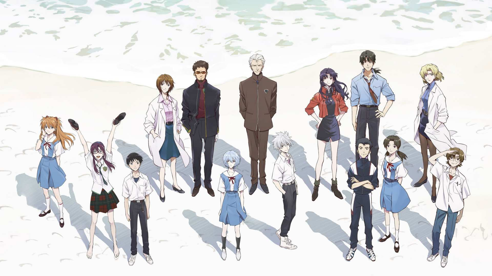
ถ้า Neon Genesis Evangelion คือการสะท้อนช่วงที่ดี ร้าย สุข ทุกข์ ปวดร้าว สับสน , Thrice Upon A Time คือการเปิดอกคุยกัน เป็นเพียงแค่เดินไปดุ่มๆแบบสงบ เผชิญกับเหล่าฝันร้ายในใจที่กัดกินเรามาตลอดหลายปี พร้อมที่จะเดินหน้าโดยเก็บเรื่องนี้ไว้ในใจ ไว้เป็นบทเรียน ก้าวไปสู่อนาคตที่ยังมีตัวเราอยู่และอยู่อย่างนั้นมา ทั้งคนที่ช่วยผลักดันเรา ส่งเสริมเรา
เราอาจจะเป็นใครก็ได้ในหนังหลายเรื่องที่คุณชอบดู เรื่องนี้ก็เช่นกัน บางทีคุณอาจจะชอบตัวละครนั้น แต่เราก็ไม่รู้อยู่ดีว่าในอนาคตนั้น เราจะยังเป็นตัวละครนั้นไปแล้วหรือไม่ ซํ้าร้าย คุณอาจจะกลายเป็นฝั่งตรงข้ามกับตัวละครที่คุณเคยเป็นไปซะอย่างนั้น .
ขอบคุณ Rebuild of Evangelion ที่ช่วยปลอบประโลมเราในช่วงเสี้ยวชีวิตวัยรุ่นว่าเราผ่านอีกหลักไมล์ของชีวิต ถึงจะช้าไปหน่อย แต่เราว่าจังหวะแกมบังคับนี้อาจจะเป็นจังหวะที่ดีที่สุดแล้ว เป็นของขวัญที่จังหวะเข้ามาเหมาะเจาะพอดีเลยด้วย
2) Wandering (2022,Lee Sang-il)
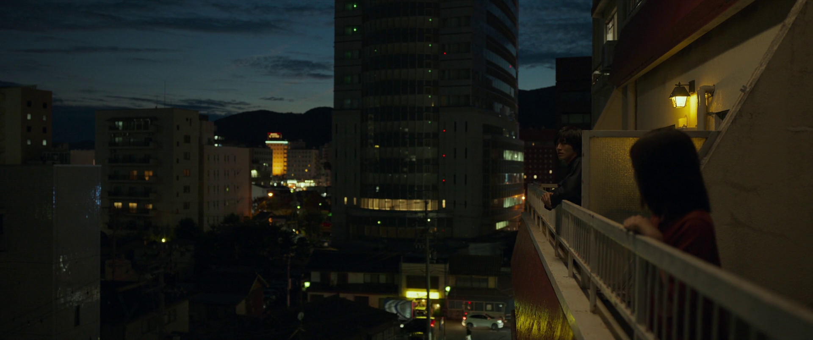
เรื่องนี้เองเป็นไม่กี่เรื่องในปีนี้ที่ "นั่งดูเงียบๆ ออกมาจากโรงแล้วก็ยังพูดอะไรไม่ออกในเชิงที่ดี" เขียนอะไรก็ไม่ถูกเพราะไม่ว่าเขียนไปทางไหนจะต้องไปแนวชี้นำ Lolicon/Pedophile เนื่องด้วยที่ตัวละครหลักเป็นแบบนั้น และไม่สามารถบอกจุดประสงค์ของหนังที่แท้จริงที่ตัวนิยายหรือหนังสื่อออกมาได้ครบด้วยซํ้าไป อยากให้ผู้ที่ผ่านมาอ่านได้ดูด้วยตัวเองมากกว่า แค่เรื่องนี้อยู่ในสิลต์ของใครหลายๆ คนก็น่าจะการันตีตวามยอดเยี่ยมของมันได้พอสมควร
เพราะ "ความเป็นจริงเบี้องหลังพาดหัวข่าว" มักมีรายละเอียดมากกว่าที่สื่อนำเสนอเสมอ
3) Wheel of Fortune and Fantasy (2021,Ryusuke Hamaguchi)
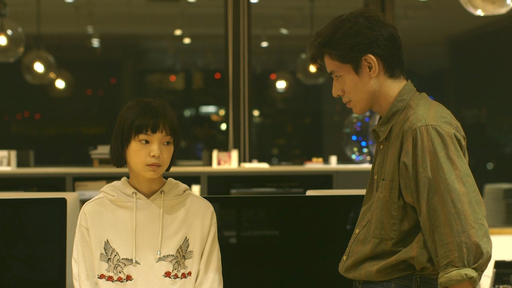
ครั้งหนึ่งในชีวิตของเรา เราอาจจะได้เจอกับสิ่งที่เราไม่คาดฝัน
บางคนอาจจะจากลากัน และดันได้กลับมาบรรจบพบกันในอีกหนหนึ่งในหลังจากนั้นไม่นาน
บางคนอาจจะได้พบเจอหรือเปลี่ยนแปลงตัวเองหลังจากเหตุการณ์ที่ตัวเองไม่คิด
บางคนอาจคว้าโอกาสแห่งโชคชะตานี่ไว้แบบไม่ทันตั้งตัว
ที่กล่าวมาก็คือสิ่งเรามองว่าเป็นหนึ่งในโครงสร้างหลักของ Wheel of Fortune and Fantasy ที่เราเห็น การนำเอาสามเหตุการณ์ที่ค่อนข้างแสนจะโบ๊ะบ๊ะจากเรื่องสั้นของ ริวสุเกะ ฮามากุชิ ที่เปรียบเหมือนกงล้อหมุนที่ทำให้ชะตาของเราพลิกผันดั่งที่ตัวเองเกินจะคาดคิด
| อ่านฉบับเต็มบน shots note • 2022 |
4) Top Gun: Maverick (2022,Joseph Kosinski)
Top Gun: Maverick เป็นหนังที่ไม่น่าเชื่อ จะได้ยินปากต่อปากกลุ่มเพื่อนๆ ที่เป็นนักเรียนด้วยกัน ซึ่งทีแรก คิดว่าไม่ใช่กลุ่มเป้าหมายของเรื่องนี้เสียด้วยซํ้าไป ปกติจะได้ยินหนัง Blockbuster ประเภท Jurassic World Dominion งี้ Jujutsu Kaisen 0 งี้ BTS PERMISSION TO DANCE ON STAGE : LIVE VIEWING งี้ แปลกใจมากที่ Top Gun กลายเป็นหนึ่งในบทสนทนา จนนี่ต้องตัดสินใจหาเวลาไปดู กว่าจะได้ดูก็เป็นโค้งสุดท้ายของการฉายรอบแรก แล้วก็ไม่ผิดหวังจริงๆ ทอม ครูซอย่างเท่ รักได้อย่างเต็มปาก และการได้กลับไปดูอีกครั้งในรอบ Re-Release ในระบบ 4DX ก็ยิ่งตอกยํ้ากว่าหนังมันสนุกเอามากจริงๆ
5) One Day, You Will Reach the Sea (2022,Ryutaro Nakagawa)
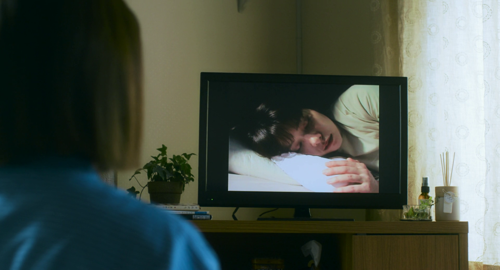
"มีพบก็ต้องมีจาก ทยอยเหลือเพียงเศษเสี้ยวของความทรงจำของคนที่ยังมีชึวิตอยู่"
ตั้งตารอดูตั้งแต่ประกาศแคสออกมา่ว่า Yukino Kishii กับ Minami Hamabe จะมาจอยในเรื่อง แค่นี้ก็พร้อมซื้อตั๋วดูแล้ว สำหรับผลงานเรื่องใหม่ของ Ryutaro Nakagawa ที่เคยมีผลงานผ่านตาคนดูหนังในเทศกาลญี่ปุ่นในไทยช่วง 2-3 ปีมานี้อย่าง Mio on the Shore (2019) และ Silent Rain (2019) นำเสนอบาดแผลของผู้ที่สูญเสียเพื่อนไปจากเหตุการณ์ภัยพิบัติ ก่อนที่จะพาออกไปสำรวจสถานที่ต่างๆ ที่เพื่อนของเธอนั้นชอบไป เสียดายที่ไม่มี distributor เจ้าไหนซื้อมาฉายในโรง
6) RRR (2022,S. S. Rajamouli)
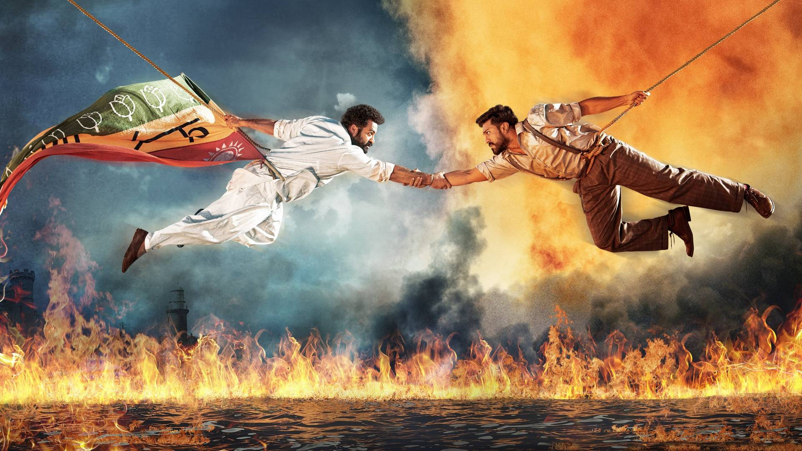
7) Decision to Leave (2022,Park Chan-wook)
ทีแรกไม่ชอบชื่อไทย "ฆาตกรรมรัก หลังเขา" แต่พอดูจบตกตะกอนก็รู้สึกว่าชื่อนี้นี่เหมาะสมที่สุดแล้ว ดูเผินๆ อาจจะบอกเล่าเพียงแค่คดีสามีของ ซอแร (ถังเหว่ย) ตกหน้าผาในตัวอย่าง แต่จริงๆ มีเรื่องปริศนาที่ชักนำเธอและเขากลับมาซํ้าแล้วซํ้าเล่า ทำให้เมื่อเราผู้เป็น spectator มองถอยออกมาชื่อไทยอาจไม่ใช่แค่ "ฆาตกรรมรัก หลังเขา" แต่สามารถเป็น "ฆาตกรรม รักหลังเขา" ได้อีกด้วย
“ตอนที่คุณบอกรัก ความรักของคุณจบลงตรงนั้น แต่สำหรับฉัน มันคือเพิ่งเริ่มต้น”
อันนี้ก็จัดอยู่ในหนังประเภท "นั่งดูเงียบๆ ออกมาจากโรงแล้วก็ยังพูดอะไรไม่ออกในเชิงที่ดี" จังหวะหนังมีลูกเล่น ชวนคนดูสำรวจสิ่งต่างๆ พร้อมตัวพระเอก เราอาจจะคิดว่า "นั่น เป็นกับดัก" แต่ก็ชวนล่อลวงเราเข้าไปเดินเหลือเกิน แต่ก็คงไม่ได้ถ้าขาดองค์ประกอบที่เพรียบพร้อมขนาดนี้โดยเฉพาะกับ ถังเหว่ย ที่หยิบ charisma ของเธอมาใช้อย่างเปี่ยมล้นจนเราเชื่อสนิทใจ
8) Glass Onion: A Knives Out Mystery (2022,Rian Johnson)
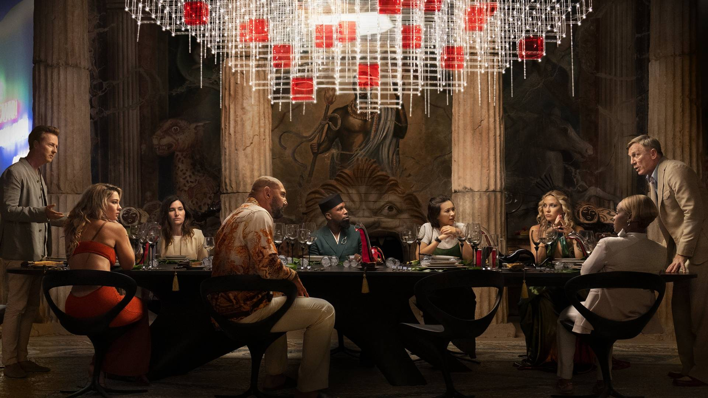
เห็นตรงกันหลายคนว่าการที่หนังถูกเปลี่ยนมือเป็นส่งตรงลง Streaming Platform อย่าง 'Netflix' แทนทำให้หนัง whodunnit เรื่องนี้อาจถูกสปอยล์ได้ง่ายมาก ไม่ถึงชั่วโมงมีเพจหนังหิวคอนเทนต์แคปฉากในหนังมาแปะเป็นคำคมแล้ว (ซึ่งพอเข้าใจได้อะเนอะ แคปง่ายแคปไว้)
แต่ใดๆ ตัว Glass Onion ไม่ใช่การ whodunnit แบบครั้ง Knives Out แต่ตามเบี้ยบ้ายรายทางของเรื่องคือการแซะพวกคนรวยที่โง่ดักดานกับปรสิตเกาะกินคนโง่ดักดาน ทำให้พอถูกเฉลยไปแล้วมันยังไปต่อได้ในตัวของมันเอง เอาจริงก็นึกไม่ออกเหมือนกันว่าถ้าคนอื่นทำจะแบกช่วงหลังเฉลยได้เท่า Rian Johnson อีกมั้ย
9) Emergency Declaration (2022,Han Jae-rim)
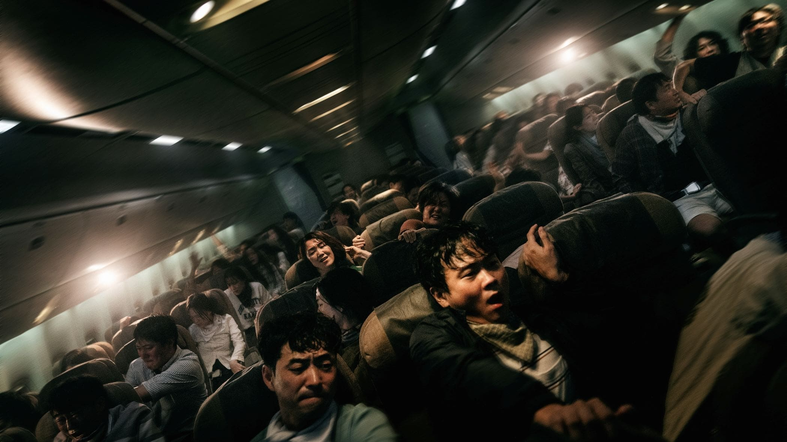
สมการรอคอยนับปี จังหวะบิ้วท์คนดูอะไรได้หมดเลย ทำได้ดีทุกจุด แต่อาจจะติดความเป็นเมนสตรีมเกาหลีเยอะจนช่วงโค้งสุดท้ายอาจจะชวนอะไรวะอยู่ไปบ้าง แต่ที่แน่ๆ ในเรื่องแซะญี่ปุ่น แซะอเมริกาทั้งเรื่องผ่านการขอแลนดิ้งลง แต่ไม่ได้รับอนุญาตจากเหตุการณ์ภายในเครื่องที่เสี่ยงต่อคนภายนอก และการที่หนังหยิบตัวละครของ ซงคังโฮ มาทำอะไรชวนช็อคคนดูขนาดนี้ เฮ้ย มึงบ้าเปล่าาาาา
จะว่าไป ปีนี้มันปีของเครื่องร่อนเครื่องบินกันจริงๆ มีทั้ง Blue Thermal, Emergency Declaration, Top Gun: Maverick ให้ชมในโรงภาพยนตร์แบบนี้
10) All About Lily Chou-Chou (2001,Shunji Iwai)
*Re-Release as House Classic Program
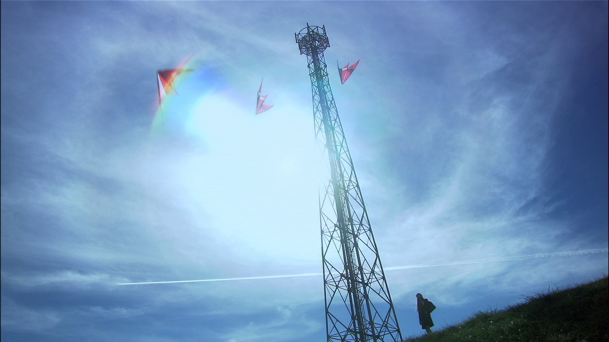
11) Blue Thermal (2022,Masaki Tachibana)
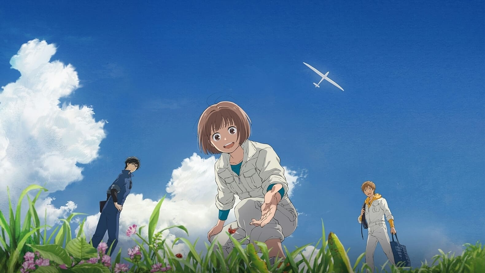
12) Hunt (2022,Lee Jung-jae)
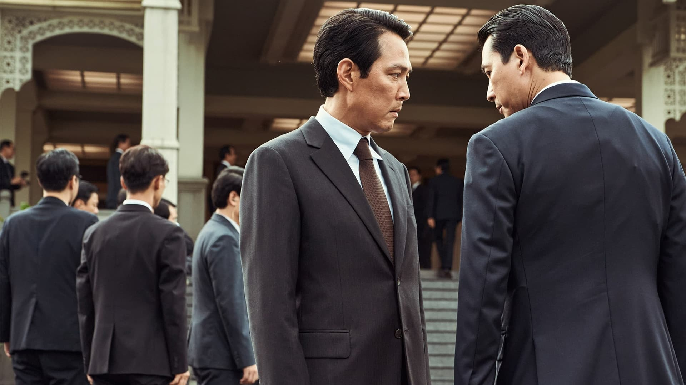
เปิดเรื่องมาเหมือนนั่งรถมาเกียร์เดินหน้าพร้อมดริฟต์ทุกโค้งที่ขวางหน้า ด้วยความที่มันเป็นหนังหลายฌอง ทั้ง political thriller / whodunnit / action แถมเดินหน้าใส่กันไม่ยั้งแม้กระทั่งคนดู (อาจจะต้องเข้าใจประวัติศาสตร์การเมืองเกาหลีไปด้วย อาทิเช่น การต่อสู้เพื่อประชาธิปไตยในกวางจู) และก็ชัดอยู่ว่าเกาหลีก็ฟัคอัพเรื่องประเด็นความอ่อนไหวทางการเมืองในประเทศด้วยแหละ เพราะบาดแผลมีจึงอยากยํ้าเตือน ถึงได้สร้างหนังแอคชั่นจำพวกนี้อยู่ปะปนกันไปในยุคหลังๆ ซึ่งพอการมาถึงของเรื่องนี้ก็สมกับที่อีจองแจที่ดันเรื่องนี้ตั้งแต่นั่งรอคนกำกับจนโดดมากำกับเองซะจริงๆ
แน่นอนว่าการที่ "เผด็จการ" มีตัวตนขึ้นมาไม่ว่าจะยุคสมัยใด มันก็ยังเหี้ยจริงๆ
13) Bullet Train (2022,David Leitch)
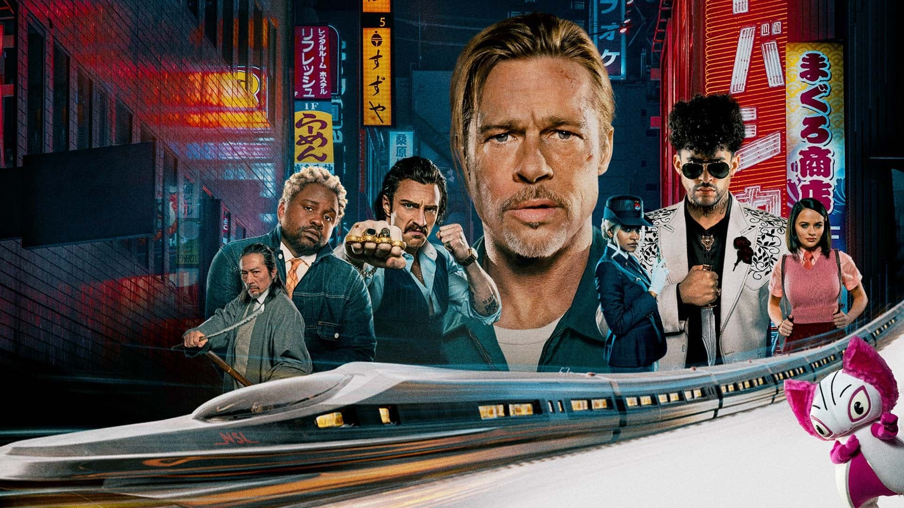เป็นหนังไม่กี่เรื่องของ David Leitch ที่ทำให้เราเอนจอยได้เต็มที่
14) Pompo the Cinephile (2021,Takayuki Hirao)
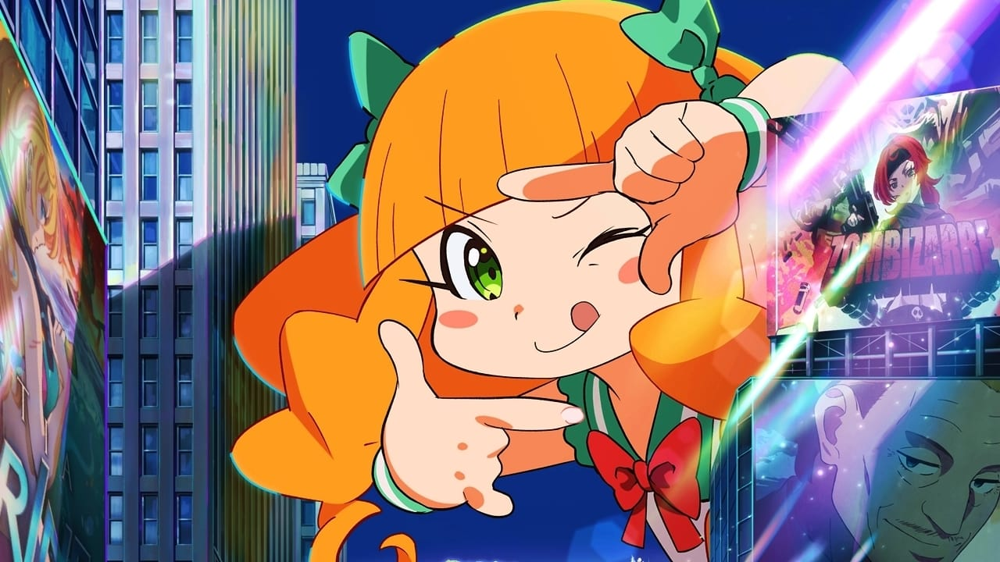
15) Fast & Feel Love (2022,Nawapol Thamrongrattanarit)
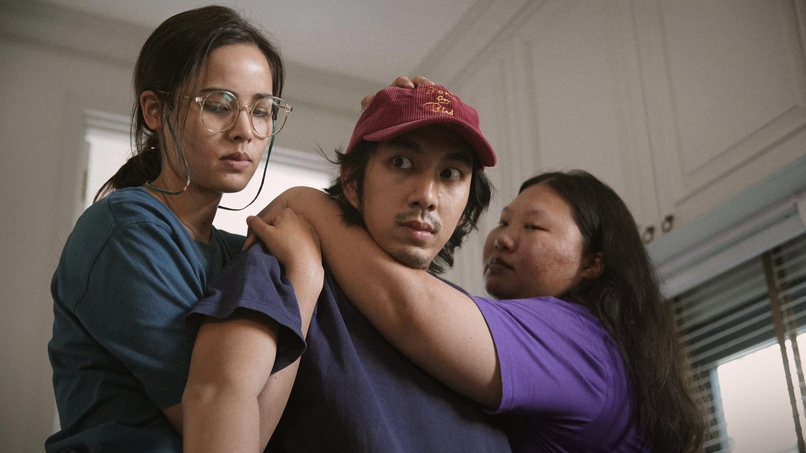
16) Ambulance (2022,Michael Bay)
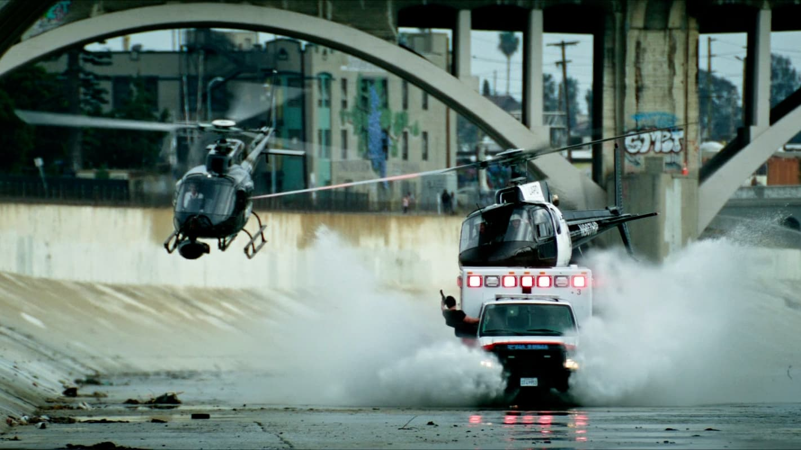
17) Summer Ghost (2021,loundraw)
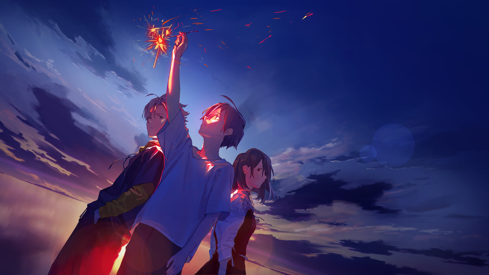
18) Shin Ultraman (2022,Shinji Higuchi)
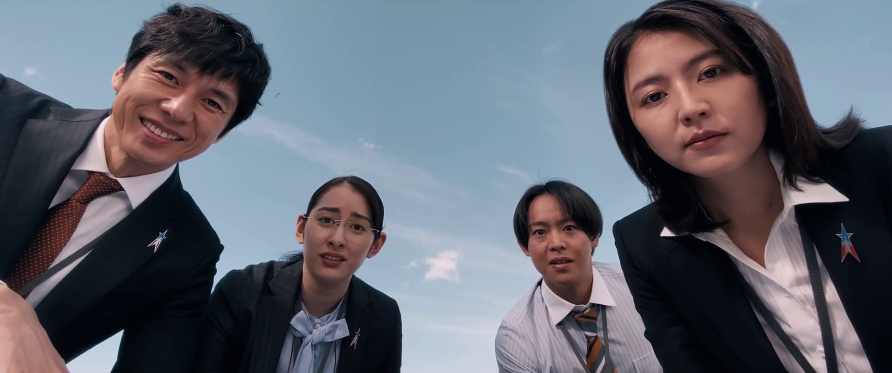
19) Broker (2022,Hirokazu Kore-eda)
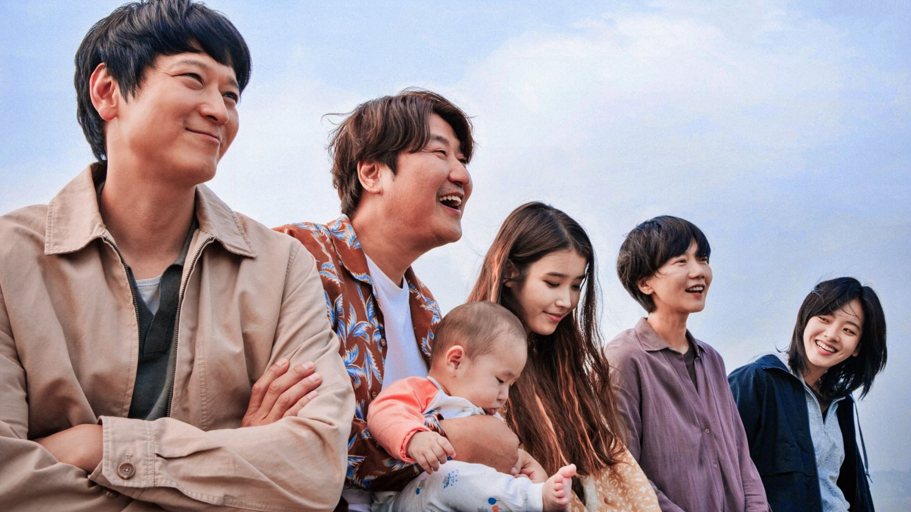
20) Detective Conan: The Bride of Halloween (2022)
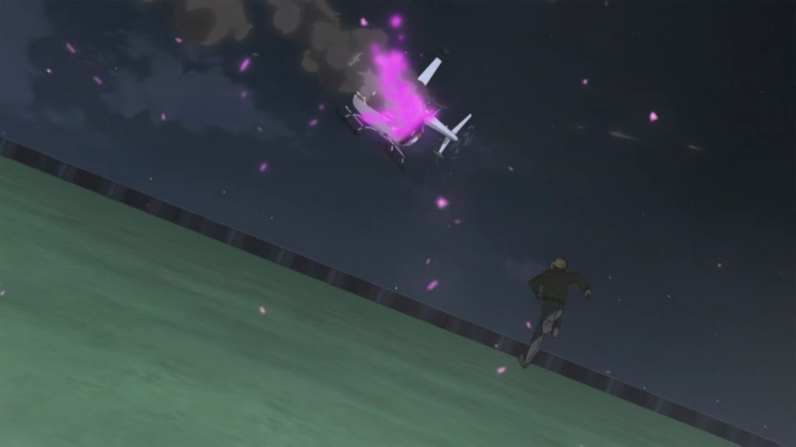 ปฎิเสธไม่ได้ว่าภาคนี้ดีกว่าภาคที่แล้ว (เยอะ) ในเรื่องเนื้อเรื่อง สนุก เกลี่ยตัวละครได้น่าสนใจ มีโหมดเท่ ซึ่งถ้าหากให้พูดนี่ว่าอาจจะเป็นส่วนผสมของ Mission Impossible กับ Conan อีกภาคที่ชอบ (อย่าไปเชื่อ พูดงี้ทุกภาคเพราะก็เล่นใหญ่ตามเลขภาคที่มันทำฉายปีต่อปีเรื่อยๆ ดีร้ายสลับกันไป ถ้าโปรดลองสังเกตรีวิวที่ผ่านมาก็คือช่วง 4 ปีหลังคือชอบกับกลางๆ ไม่ดีไม่แย่สลับกันจริงๆ) และในภาคนี้นั้น สกอร์ซาวด์แทรคค่อนข้างโดดเด่น อาจจะไม่เป็นหนึ่งอันเดียวกับซีนที่มันเล่าอยู่ แต่ก็ผลักดันในระดับหนึ่ง ซึ่งก็ชอบอยู่ดี (Yugo Kanno น่าจะจับงานนี้ถนัดมือด้วย เพราะถ้านับย้อนไปตั้งแต่ SP, AI Know Love, Ajin หรือเหล่า The Sun Does Not Move ก็คือมีความเป็นเอกลักษณ์ ที่บอกว่าไม่เป็นเนื้อเดียวกัน ก็คือถึงแม้ธีมโคนันมันจะชัด แต่ธีมความเป็น Yugo Kanno ในโหมดหนังแอคชั่นก็ช่วยผลักดันเรื่องนี้ไปอีกถึงแม้ในสายตาจะแอบขัดๆไปบ้างก็ตาม)
ส่วนทอม ครูซประจำภาคนี้นั้นให้ไปดูกันเอา บอกไม่ได้และจะไม่พูดด้วยว่าบันเทิงขนาดไหน แต่ติดประทับฉากแอคชั่นสตั้นในใจในส่วนเดอะมูฟวี่ไปแล้ว บอกเลย นึกภาพไม่ออกเลยว่าฉาย 4D ตัวจะโยกขนาดไหนเชียวฉากนั้น (เหมือนทำมาเพื่อฟังก์ชั่นนี้โดยเฉพาะเลย อามุโร่/10) - ส่วนชิบูย่านั้น คงอารมณ์ประมาณว่า "อีกแล้วเหรอ ตอน Midnight Maiden / Silent Tokyo ยังไม่สาแก่ใจกันอีกเหรอ" นับว่าเป็นสถานที่สำคัญที่หมายตาแก่การกกร. (เลี่ยงสุดๆ ถ้าอ่านว่าโกโกโร่จะดีมาก) จริงๆ
รองลงมาที่น่าสนใจ
21.Sing a Bit of Harmony (2021)
22.Harry Potter and the Prisoner of Azkaban (2004)
23.The Worst Person in the World (2021) | อ่านฉบับเต็มบน shots note • 2022 |
24.Hotel Transylvania: Transformania (2022) | อ่านฉบับเต็มบน shots note • 2022 |
25.Alive Drift (2022) | อ่านฉบับเต็มบน shots note • 2022 |
26.Kimi (2022)
27.SLR (2022) | อ่านฉบับเต็มบน shots note • 2022 |
28.The Black Phone (2021)
29.The Anchor (2022)
30.Roald Dahl’s Matilda the Musical (2022)
31.Everything Everywhere All at Once (2022)
32.The Bad Guys (2022)
33.Noise (2022) | อ่านฉบับเต็มบน shots note • 2022 |
34.Six Characters (2022) | อ่านฉบับเต็มบน shots note • 2022 |
35.Confidential Assignment 2: International (2022)
36.Doctor Strange in the Multiverse of Madness (2022)
37.What Did You Eat Yesterday? The Movie (2021) | อ่านฉบับเต็มบน shots note • 2022 |
38.The Cheese Sisters (2022) | อ่านฉบับเต็มบน shots note • 2022 |
39.One Piece Film Red (2022)
40.Where the Crawdads Sing (2022)
41.Ox-Head Village (2022) | อ่านฉบับเต็มบน shots note • 2022 |
42.The Lake (2022)
43.Love Destiny: The Movie (2022) | อ่านฉบับเต็มบน shots note • 2022 |
44.Your Turn to Kill: The Movie (2021) | อ่านฉบับเต็มบน shots note • 2022 |
45.Violent Night (2022)
46.Halloween Ends (2022)
47.Fresh (2022)
48.Jackass Forever (2022)
49.Moonfall (2022)
50.Chip ’n Dale: Rescue Rangers (2022)
51.Uncharted (2022)
52.Cherry Magic! THE MOVIE (2022)
53.Love and Leashes (2022)
54.The Adam Project (2022) | อ่านฉบับเต็มบน shots note • 2022 |
55.Happy Ending (2022)
56.Cracked (2022) | อ่านฉบับเต็มบน shots note • 2022 |
57.Scream (2022)